地政学
ダッカはガンジス、ブラマプトラ、メグナのデルタ国家を統括する首都であり、インド、ベンガル湾、気候移民、開発援助、選挙政治が交差する。水と人口の安全保障を抱える国の中枢である。外交と港湾政策にも影響する。
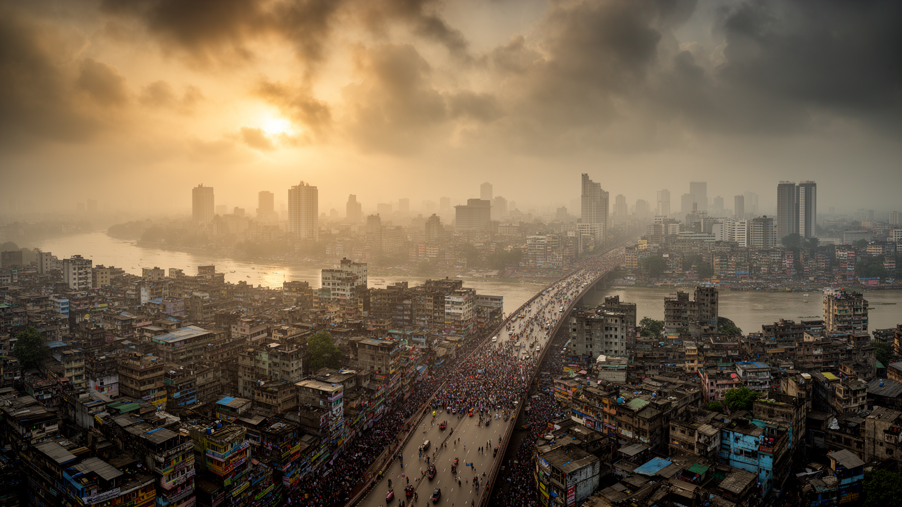
🇧🇩 バングラデシュ / アジア / World City Atlas
デルタの低地に人口、縫製産業、政治、リキシャ、河港、祈りが集まり、南アジアの成長と脆さを同時に映す首都。
都市の骨格
ブリガンガ川沿いの旧市街から北の新興地区まで、ダッカは水、道路、工場、大学、官庁、祈りの空間を濃密に重ねている。
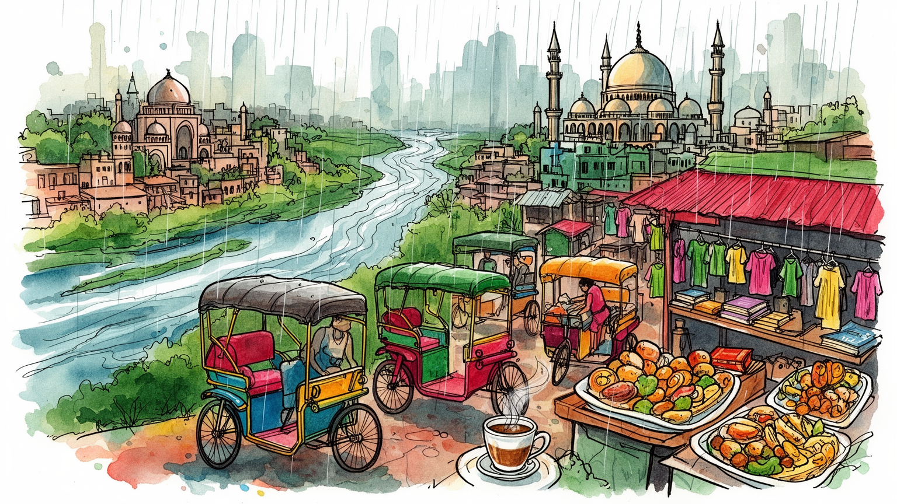
ダッカはガンジス、ブラマプトラ、メグナのデルタ国家を統括する首都であり、インド、ベンガル湾、気候移民、開発援助、選挙政治が交差する。水と人口の安全保障を抱える国の中枢である。外交と港湾政策にも影響する。
縫製輸出、金融、物流、食品、出版、教育、医療、ITが集中し、女性労働者、移住者、配送、露店、建設、家事労働が都市を支える。成長の速度と賃金、労災、通勤の重さが併存する。家計の送金も都市を日々動かす力だ。
ベンガル語運動、独立戦争の記憶、イスラムの礼拝、ヒンドゥー寺院、詩、出版、料理、音楽が混じる。モスクの呼び声と大学街の議論が、近代国家と日常信仰を結びつける都市である。祭礼も街の暦を強く動かす力だ。
リキシャ、渋滞、旧市街の路地、河港、市場、屋台、集合住宅、高級地区、スラムが近接する。旅人はモスクや博物館だけでなく、混雑と食の濃さから暮らしの現実を読むことになる。水辺の移動も旅の核心ともなる。
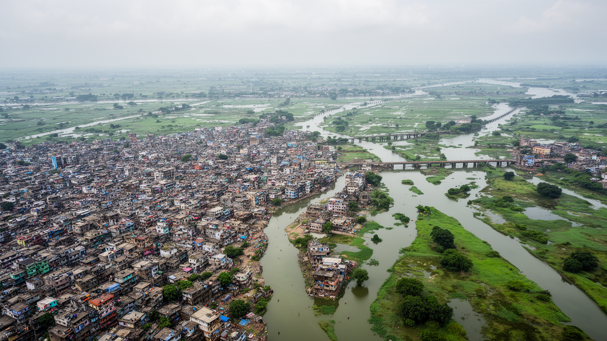
ダッカを理解する入口は、地図上の点ではなく、巨大なデルタの中に置かれた低地の都市として見ることである。ブリガンガ川、トゥラグ川、バル川、シタラクシャ川に囲まれた市街地は、南アジアの大河が運ぶ土砂と水のリズムの上に成り立つ。乾季には道路と建設現場が都市の拡張を急がせ、雨季には冠水、排水不良、河川汚染、交通麻痺が日常の脆さを露出させる。周辺の湿地や水路はかつて洪水を受け止める余白だったが、住宅地、工場、道路、埋め立てで狭まり、都市は水を避けるよりも水と衝突しながら大きくなった。地形の低さは、気候変動や上流域の水管理、サイクロン、豪雨を国際政治と生活に結びつける。ダッカの密度は単なる人口集中ではなく、水の逃げ道を失った都市の密度でもある。橋、堤防、排水路、ポンプ、河港、埋立地を読むと、経済成長と環境リスクが同じ場所で進んできたことがわかる。さらに、都市境界の外側で農地や湿地が住宅へ変わるたび、雨水の行き場は狭まり、低所得者の居住地ほど浸水にさらされる。水辺は交通と商業の資産であると同時に、汚染と災害を運ぶ経路でもあり、ダッカの都市計画は常に川との交渉として進む。地形を軽視すれば、道路や高層住宅の整備も長続きしない。だから開発の成否は、地面の高さと水路の記憶を尊重できるかで決まる課題である。
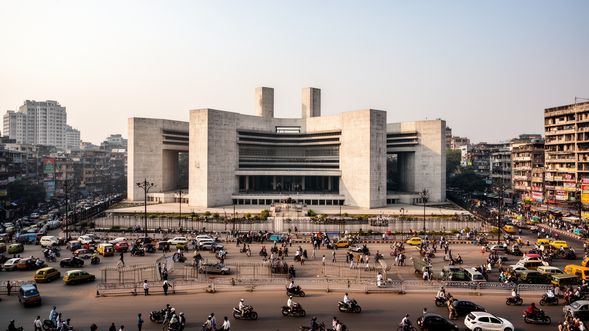
ダッカはバングラデシュの官庁、国会、最高裁、主要政党、外交機関、報道機関が集まる政治都市である。新国会議事堂の幾何学的な建築は国家の近代化を象徴する一方、旧市街や大学街、幹線道路ではデモ、選挙運動、ストライキ、警備、交通規制が政治を生活の近くに置く。独立戦争、言語運動、軍政、民主化、政党対立の記憶は、記念碑や大学、広場、家族の語りに残り、国民国家の物語を日々更新している。首都への集中は政策決定を速くするが、地方の洪水、農村貧困、出稼ぎ、沿岸部の気候危機がダッカへ押し寄せる構造も作る。政治的な緊張は交通や商売、学校、医療にも影響し、市民はニュースと道路状況を同時に確認しながら行動する。ダッカの政治性は議会の中だけにあるのではなく、街頭、キャンパス、労働組合、報道、宗教団体、市民団体が交差する公共空間に現れる。海外援助、インフラ融資、難民対応、労働基準をめぐる国際交渉も首都で可視化され、政府の選択は港湾、工場、農村、沿岸部へ波及する。政治が止まれば道路も商取引も止まるため、市民は国家の大きな争点を生活上のリスクとして感じる。首都の過密は、権力への近さと負担の集中を同時に意味する。行政の透明性や警察の振る舞いは、都市への信頼を左右する日常的な問題でもある。首都に集まる声をどう制度へ戻すかが、民主主義の厚みを測る。
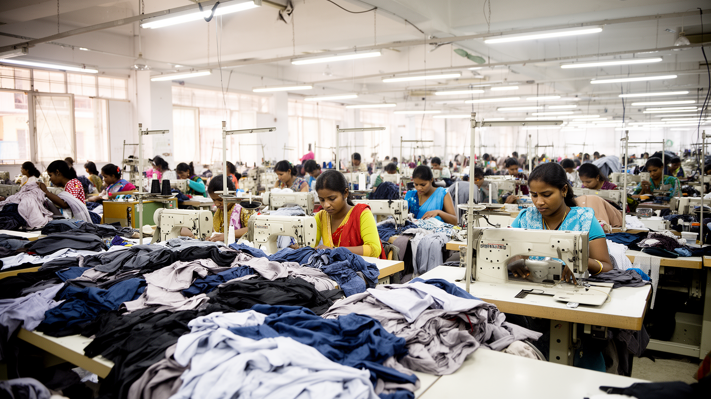
ダッカ首都圏の経済を語る時、縫製産業を外すことはできない。工場は市内中心部だけでなくガジプル、サバール、ナラヤンガンジなど周辺の工業地へ広がり、輸出向け衣料を世界市場へ送り出している。多くの女性労働者が農村から移り、賃金を家族へ送り、教育や住宅の可能性を広げてきた一方、低賃金、長時間労働、労働安全、組合活動、通勤混雑、保育の不足は深刻な問題である。国際ブランドの注文、為替、港湾物流、電力、工場監査は、地元の作業台に直接つながる。縫製は女性の都市参加を進めたが、職場と家庭の負担を同時に増やした面もある。工場の外では食堂、寮、露店、送金業、バス、医療、教育が労働者の生活圏を作る。ダッカの産業は華やかな本社経済よりも、世界の消費者が着る服を支える膨大な手仕事によって都市の輪郭を持つ。成長を読むには、輸出額と同じ重さで働く人の安全を見なければならない。工場災害の記憶は、建物の耐震性、避難路、監査の透明性、発注側の価格責任を都市の課題にした。労働者は賃上げを求めるだけでなく、住まい、保育、医療、通勤の改善を必要としている。縫製の競争力は安い賃金だけでは続かず、技能、尊厳、安全をどう高めるかに左右される。輸出の成功を誇るほど、都市は現場の声を聞く責任も大きくなる。その信頼が輸出競争力を支える力だ。
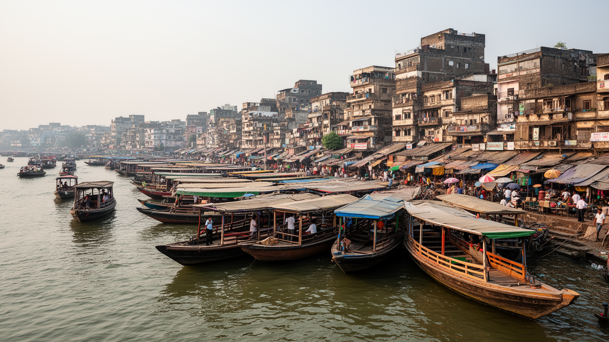
旧ダッカは、細い路地、卸売市場、モスク、ヒンドゥー寺院、古い邸宅、食堂、職人の店、河港が密集する都市の記憶庫である。ブリガンガ川のサダルガート周辺では、フェリー、貨物、通勤客、露店、荷役が重なり、水上交通が今も首都の重要な動脈であることを示す。ムガル期のラールバーグ城塞、アルメニア教会、アフサン・マンジルのような遺産は、ベンガルの商業、植民地支配、多宗教の歴史を街路に残す。しかし旧市街は観光的な懐かしさだけでは読めない。過密な建物、火災リスク、化学品倉庫、狭い道路、衛生、河川汚染は、古い商業機能と安全基準の衝突を見せる。商人や職人は長い信用関係で商いを続け、路地ごとに商品や技能の専門性がある。旧ダッカを歩くことは、首都の成長が郊外の新ビルだけでなく、河港と路地の粘り強い商業に支えられていると知ることである。ここでは歴史、物流、食、危険、親密さが切り離せない。道路拡幅や再開発は安全を高める可能性を持つが、店先の関係や小さな工房を失わせるおそれもある。保存は建物を残すだけでなく、港へ向かう荷物の流れ、昼食の時間、礼拝への移動、家族経営の商習慣をどう守るかという問題である。旧市街の混雑は不便であると同時に、都市の記憶がまだ働いている証拠でもある。河港の朝と夜を見れば、ダッカが今も水の商業都市であることがわかる。
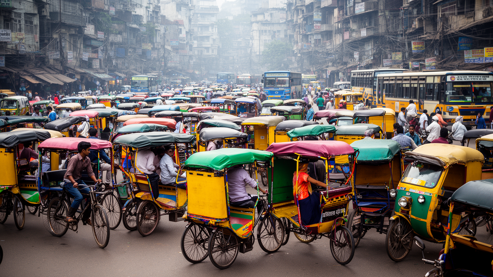
ダッカの移動は、世界的に知られる渋滞と、リキシャ、バス、徒歩、オート三輪、鉄道、河川交通、建設中の都市鉄道が重なって成り立つ。幹線道路では車とバスが詰まり、狭い路地ではリキシャが細かな移動を支え、歩行者は市場、排水溝、露店、工事現場の間を縫うように進む。交通の遅さは経済損失として語られるが、通勤者、学生、工場労働者、患者、配達員、家事労働者にとっては一日の疲労そのものである。リキシャは雇用を生み、短距離移動を支える一方、道路空間の配分や規制をめぐる議論も絶えない。都市鉄道や高架道路は移動を改善する期待を担うが、駅までの歩行環境、運賃、バスとの接続、立ち退き、工事中の混乱も考えなければならない。ダッカの交通は、単に車が多いという問題ではなく、急増した人口と雇用を支える都市空間が追いついていない問題である。誰が速く移動でき、誰が待たされるかを見ると、都市の階層が見えてくる。歩道がふさがれば、子どもや高齢者、障害者の移動はさらに難しくなり、雨の日には短い距離も危険になる。交通改革は鉄道建設だけで終わらず、バス停、交差点、歩道、排水、運転手の労働条件まで含む。遅れを前提にした都市生活は、人びとの余暇や睡眠を静かに削っている。速さよりも、確実に着ける移動を増やすことが生活の質を変える基本である。
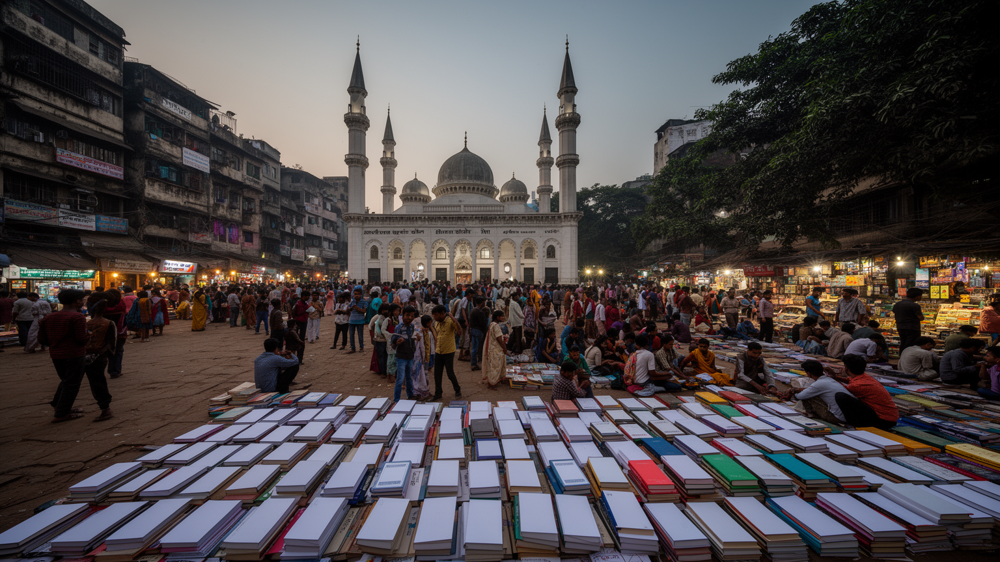
ダッカの日常にはイスラムの礼拝が深く入り込み、モスクの呼び声、金曜礼拝、ラマダンの食卓、寄付、宗教学校、葬儀が生活の時間割を作る。多数派のイスラム文化の中に、ヒンドゥー寺院、仏教徒、キリスト教徒、少数派コミュニティの祈りも存在し、都市の多層性を保っている。宗教は支えや福祉を生む一方、政治的な動員や少数者の不安にもつながりうるため、都市の公共性を読む重要な視点である。もう一つ欠かせないのがベンガル語の記憶である。言語運動は国家形成の中心的な物語となり、大学、記念碑、出版、詩、歌、書店が言葉を政治と文化の基盤にしてきた。ダッカでは祈りと文字が街を形づくり、宗教的な節目と世俗的な記念日が都市の暦を作る。路地の小さなモスク、大学の議論、書籍市場、家庭の祭礼を同じ地図に置くと、国家と個人の関係が見えてくる。信仰と言語は、首都の雑踏に秩序と記憶を与える力である。ブックフェアや詩の朗読、殉教者の日の献花は、言葉が単なる意思疎通ではなく、尊厳と政治参加の根になることを示す。礼拝所と学校、出版社、新聞社が近くにあるため、公共の議論は宗教、教育、文学を横断して広がる。都市の寛容さは、この多層性をどう守るかで試される。祝祭の日には、道路や市場も祈りと記憶の舞台へ変わる。それは都市の礼節と対話の基盤にもなる。
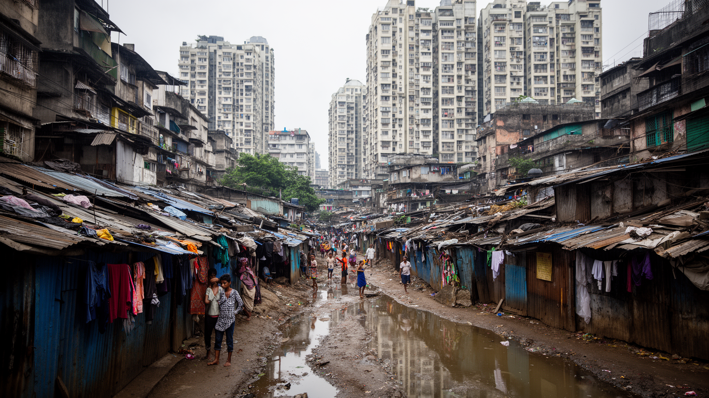
ダッカの人口増加は、農村からの移住、気候災害、雇用機会、教育、医療、家族ネットワークによって続いている。新しく来た人びとは工場、建設、リキシャ、家事労働、露店、警備、配送などで働き、低家賃の部屋、スラム、工場近くの寮、親族宅から生活を始めることが多い。都市は彼らの労働なしには動かないが、安全な住宅、清潔な水、排水、電気、学校、医療へのアクセスは不安定である。高級地区のアパートやゲート付き住宅、国際機関のオフィスが増える一方、低所得者の居住地は立ち退きや火災、浸水の危険にさらされる。家賃の上昇は、わずかな賃金上昇をすぐに吸収し、通勤時間や食費を圧迫する。移住者は単なる受け身の貧困層ではなく、送金、起業、教育投資、地域組織を通じて都市と出身地を結ぶ主体でもある。ダッカの住まいを読むことは、都市が誰を迎え入れ、誰を周縁に押し出すのかを見ることに等しい。住宅政策は福祉ではなく、経済を支える基盤である。居住地が不安定だと、子どもの通学、女性の通勤、病気の治療、貯蓄の計画まで揺らぐ。近隣の相互扶助や小さな貸し借りは生活を支えるが、災害や立ち退きの前では脆い。都市が移住者を一時的な労働力として扱う限り、成長の足元は不安定なままである。住所を持てることは、学校、仕事、銀行、投票へ入るための入口にもなる。
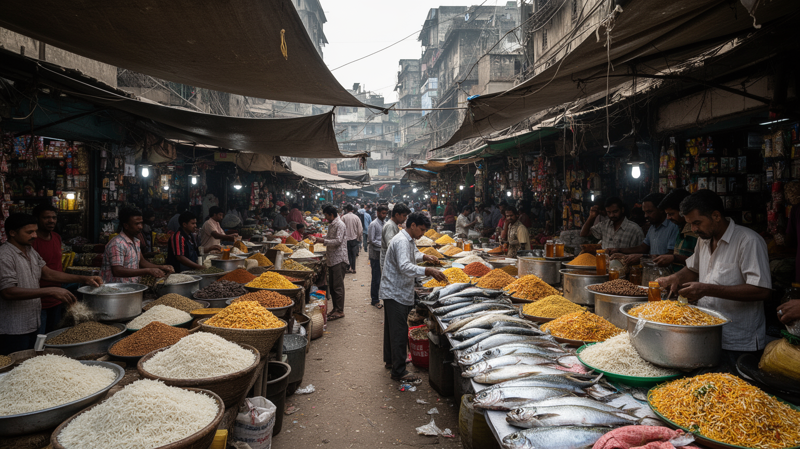
ダッカの食は、米、魚、レンズ豆、野菜、香辛料、牛肉、鶏肉、甘い菓子、茶を中心に、家庭、屋台、食堂、ホテル、旧市街の名物店で展開する。ビリヤニ、カッチ、ヒルサ、ボルタ、パラタ、ケバブ、フィルニのような料理は、祝祭、仕事帰り、学生の食事、家族の外食、ラマダンのイフタールと結びつく。市場では魚、米、衣料、日用品、携帯電話、書籍が近距離で売られ、都市の消費と生活費がはっきり見える。食の豊かさの背後には、農村と河川、冷蔵物流、卸売、露店、女性の家庭内労働、低賃金の調理労働がある。食品価格の上昇は家計を直撃し、洪水や輸入価格、燃料費が食卓に跳ね返る。旧ダッカの料理は観光の魅力でもあるが、狭い調理場や混雑した路地は衛生と安全の課題も抱える。ダッカの食文化を読むには、香りや味だけでなく、誰が仕入れ、誰が火を扱い、誰が夜遅くまで客を待つのかを見る必要がある。食卓は都市の階層と連帯を同時に映す。ラマダンの夕方には通りの時間感覚が変わり、店先の軽食、家へ急ぐ人、礼拝へ向かう人が同じリズムを作る。市場の価格交渉や屋台の席は、見知らぬ人同士の距離を縮める場所でもある。料理の濃い香りは、都市の混雑を不快さだけでなく共同性として感じさせる。食べる場所の選択には、所得、宗教暦、仕事の時間が細かく表れる記憶にもなる。
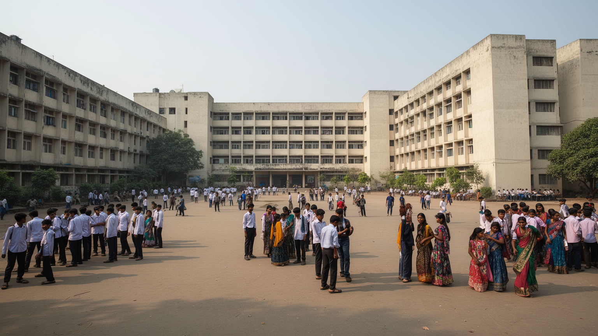
ダッカには大学、専門学校、英語教育、塾、研究機関、病院、診療所、薬局、国際機関、NGOが集中し、全国から進学や治療を求める人びとが集まる。ダッカ大学は言語運動や政治運動の舞台であり、現在も知識人、学生運動、出版文化を支える象徴的な場所である。私立大学や専門教育の拡大は中間層の進路を広げ、IT、経営、医療、工学の人材を育てる一方、学費、教育格差、就職の不安も強める。医療では大病院が高度な治療を担うが、混雑、費用、地方からの移動、家族の付き添い、薬の自己負担が患者に重くのしかかる。都市の教育と医療は希望を与えるが、同時に首都へ行かなければ機会を得にくい国土構造を示す。学生寮、下宿、病院周辺の宿、食堂、コピー店、薬局は、知識とケアの周辺に小さな経済を作る。ダッカの成長を支えるのは工場だけではなく、学びと治療を求める人の移動である。機会の集中は都市を強くし、地方との格差も深める。受験競争や英語教育への投資は家計の大きな負担になり、教育の質は所得や居住地で分かれやすい。病院の廊下や大学の食堂には、地方から来た家族の期待と不安が集まる。知識と医療を広く届けるには、首都の施設を増やすだけでなく、地方都市との役割分担も欠かせない。学びと治療のための移動は、都市への信頼と不平等を同時に運んでくる課題。
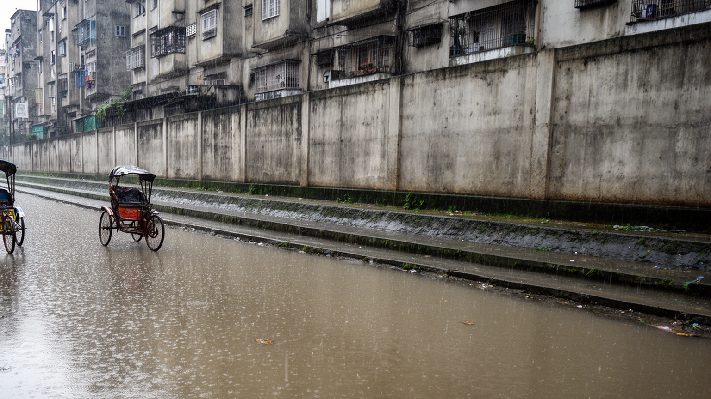
ダッカの気候リスクは、海面上昇の象徴だけでは語り切れない。都市そのものは内陸にあるが、国全体の低地、沿岸部のサイクロン、塩害、河岸侵食、農村の生計不安が人口移動を通じて首都に現れる。市内では豪雨、冠水、熱波、大気汚染、河川汚染、廃棄物、地下水の利用、緑地不足が複合し、低所得者ほど被害を受けやすい。排水路が詰まり、湿地が埋められ、舗装面が増えると、短時間の雨でも道路や住宅が水に沈む。暑さは屋外労働者、リキシャ運転手、建設労働者、露店商、子ども、高齢者に強く響き、医療費や労働時間にも影響する。環境政策は公園や景観の問題ではなく、住まい、交通、工場立地、廃棄物処理、水路保全、地方の気候適応をつなぐ都市の生存戦略である。ダッカは気候変動を未来の危機としてではなく、すでに移住、家賃、通勤、健康、食料価格に入り込んだ現実として経験している。水と熱をどう扱うかが、首都の公平性を決める。河川をきれいにすることは観光整備ではなく、飲み水、漁業、移動、感染症対策を守る行為でもある。緑地や水面に近い涼しさを誰が享受できるかは、所得や居住地によって違う。気候適応は大型インフラと同時に、排水溝を詰まらせない日々の管理や地域の避難体制にもかかっている。環境の改善は、最も弱い場所から始めなければ都市全体の安全にならない。
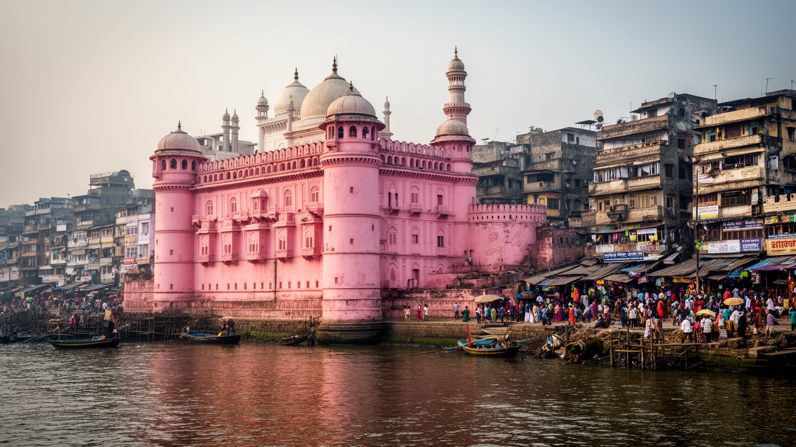
ダッカ観光は、整った名所を順に巡る旅というより、混雑の中で都市の層を読み取る経験に近い。ラールバーグ城塞、アフサン・マンジル、スター・モスク、国会議事堂、解放戦争博物館、ショヒド・ミナール、ダッカ大学、サダルガートの河港は、ムガル、植民地、言語運動、独立戦争、現代国家の記憶をそれぞれ示す。旧市街ではリキシャの装飾、食堂、香辛料、布地、宝飾、路地の商いが観光の主要な風景になる。だが観光客の視線は、住民の通勤、礼拝、商売、学校、渋滞と同じ空間に入るため、撮影や消費が生活を妨げない配慮も必要である。高級ホテルや外交地区の静けさと、旧市街の密度を往復すると、同じ首都に複数の速度があることがわかる。ダッカの魅力は、磨かれた景観だけにあるのではない。水上交通の揺れ、市場の声、礼拝の時間、国会建築の抽象性、戦争記憶の重さが一つの旅に入ってくる点にある。観光は都市の不便さも含めて、ベンガルの歴史と生活を学ぶ入口になる。訪問者が増えれば、案内人、運転手、食堂、宿泊、清掃、警備の仕事も生まれるが、混雑や価格上昇が住民の負担になることもある。遺産を守るには、建築の修復だけでなく、周辺の商いと生活を無理に追い出さない調整が必要である。ダッカの観光は、見物よりも都市への敬意を求める。短い滞在でも、河港と大学、旧市街と国会を結ぶだけで都市の厚みが見える。
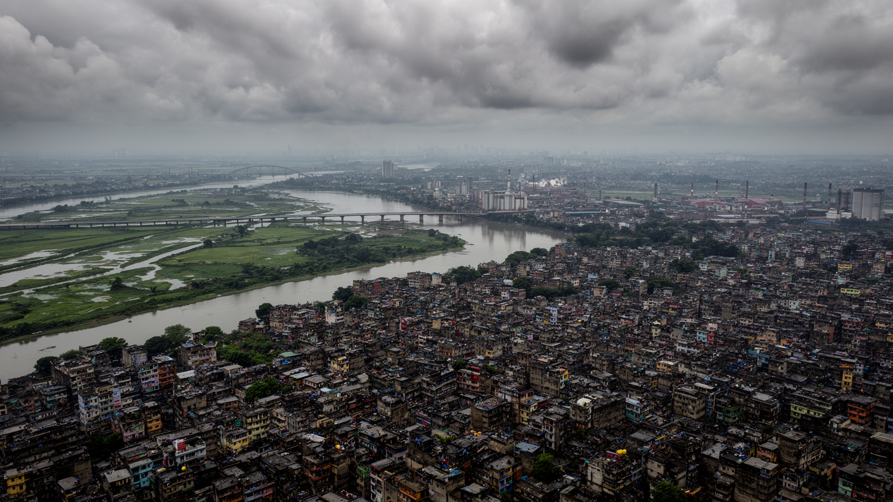
ダッカは、世界都市を高層ビルや金融だけで測る見方を揺さぶる。ここでは縫製工場の作業台、リキシャの車輪、旧市街の河港、国会議事堂、モスク、大学、病院、スラム、湿地、建設現場が、同じ首都圏の中で強く結びつく。経済成長は多くの雇用を生み、女性の賃金労働や教育機会を広げてきたが、過密、住宅不足、交通麻痺、環境汚染、労働安全、政治的緊張を同時に抱え込んでいる。気候危機は遠い未来ではなく、農村からの移住、都市の冠水、熱波、食料価格、健康被害として日々の判断に入り込む。ダッカを貧困や混雑だけで見ると、商いの力、家族の送金、言語文化、食の豊かさ、学びへの欲望を見落とす。逆に成長の数字だけで見ると、働く人の疲労や水辺の危険が消えてしまう。必要なのは、密度を問題としてだけでなく、都市を支える関係の濃さとして読む視点である。ダッカは、二十一世紀の都市化が希望と負担を同時に運ぶことを最も濃く示す首都の一つである。都市の未来は、鉄道や高層住宅の建設だけで決まらず、低所得者の住まい、工場の安全、川の回復、女性の移動、地方との連携をどう扱うかにかかっている。世界経済の服を縫い、気候危機の移住者を受け入れ、言語と独立の記憶を抱くダッカは、成長の意味を問い直す場所でもある。混雑の奥にある生活の工夫を見れば、都市の力は数字よりも人の関係に宿る。